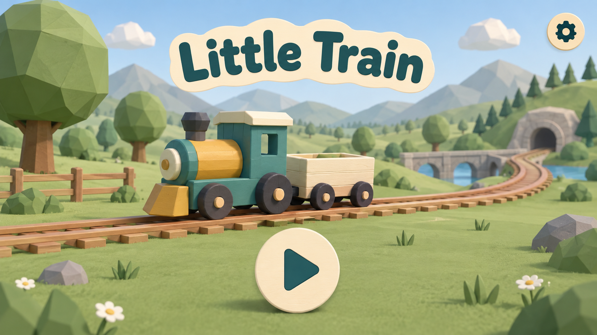
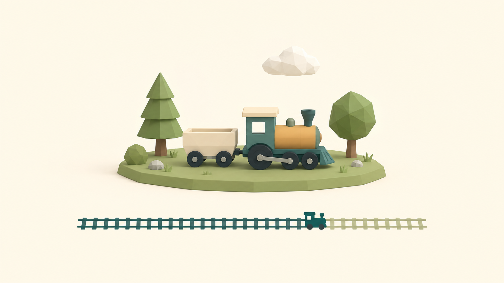
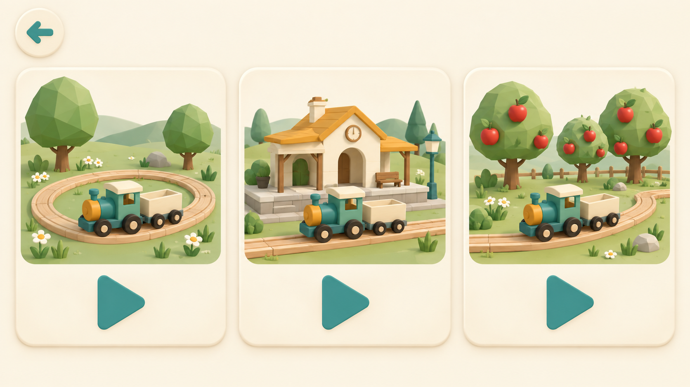
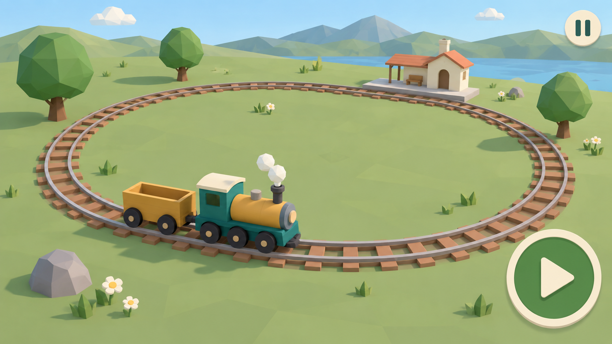
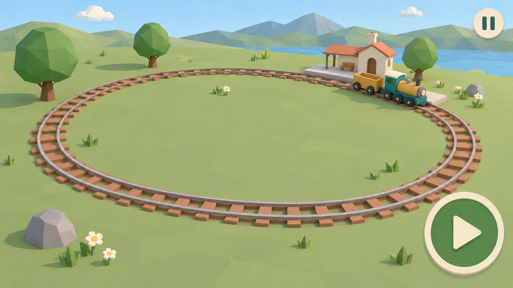
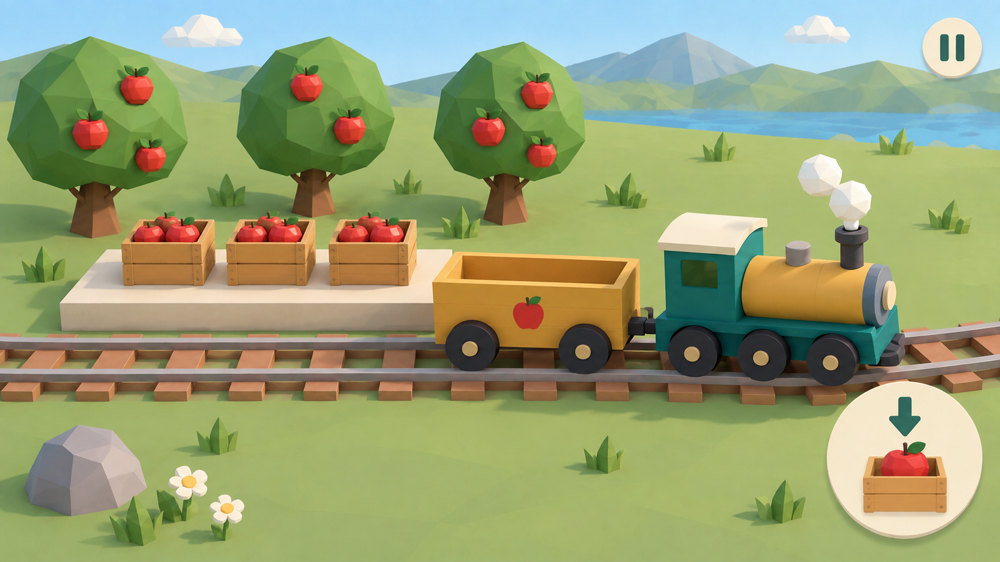
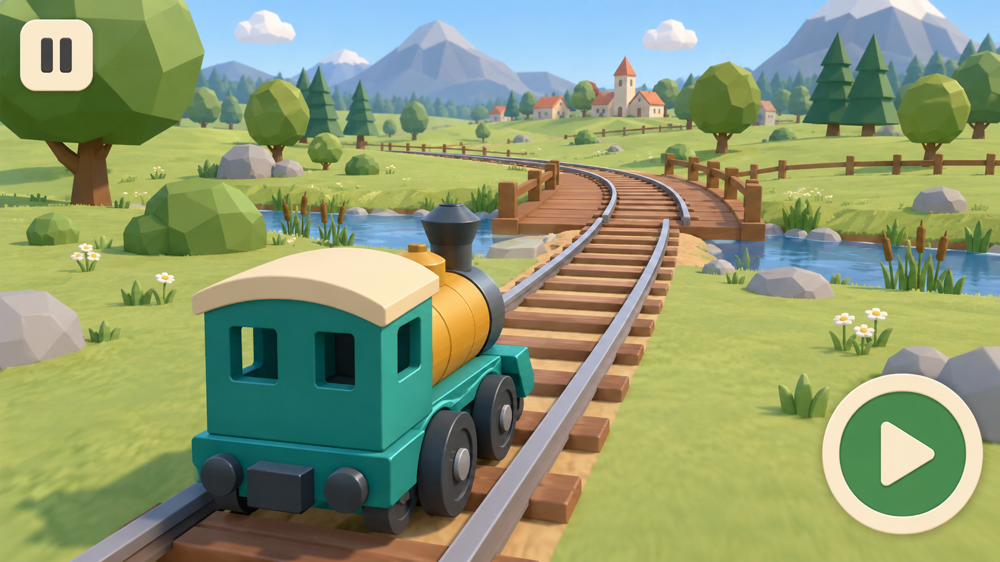
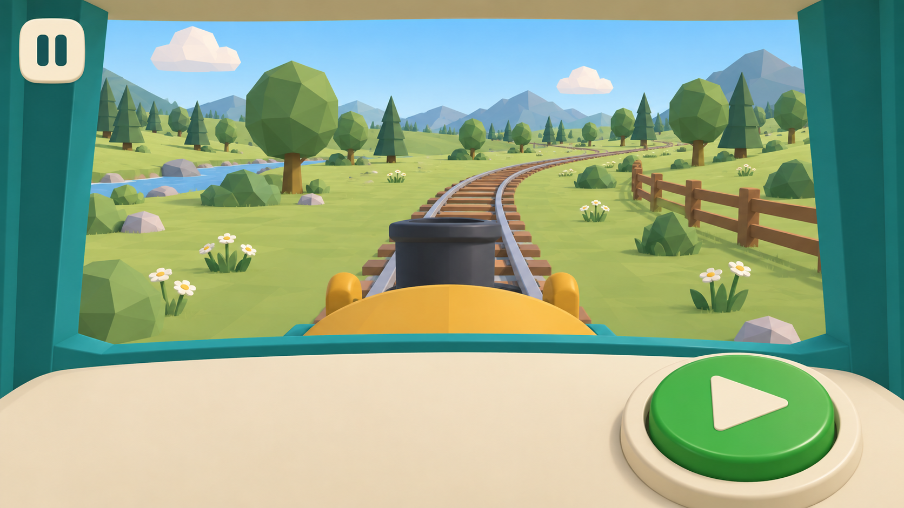

Design review 01 · Generated conceptsA little train.
A world to explore.
Eight mockups for discussion before implementation. These are generated design concepts, not screenshots of the game. Choose the camera, controls, and visual direction before we build or deploy.
Opening the game

01 · Main menuOne clear play action. A welcoming train, without competing choices.

02 · LoadingA calm transition. Actual loading progress will need to correspond to completed work.

03 · Choose a placeLarge illustrated destinations. No locks, scores, or reading-dependent choices.
Gameplay · an overview journey

04 · Meadow drivingThe toy-world view: see the train, track, and result of holding the control.

05 · Station arrivalA recognizable place to stop. Arrival behavior is a proposal for review.

06 · Orchard loadingOptional concrete cargo activity. One action changes the wagon visibly.
Gameplay · alternative driving views

07 · Follow the trainCloser to the locomotive. Compare train visibility and camera motion with the overview.

08 · In the driver's cabA simulator direction with a simple physical-looking control. Ergonomics need child testing.
What to choose
Which driving view feels right: overview, follow, or cab? Then review the train, palette, screen flow, and whether cargo belongs in the first journey. Camera alternatives are not a commitment to five separate levels.